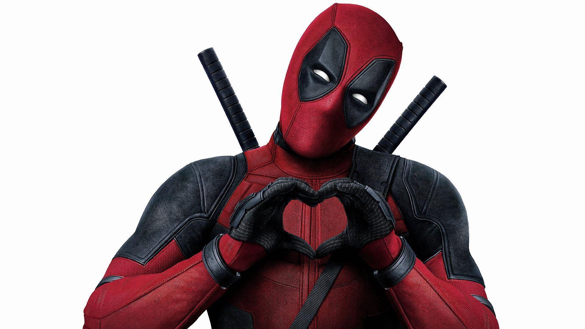
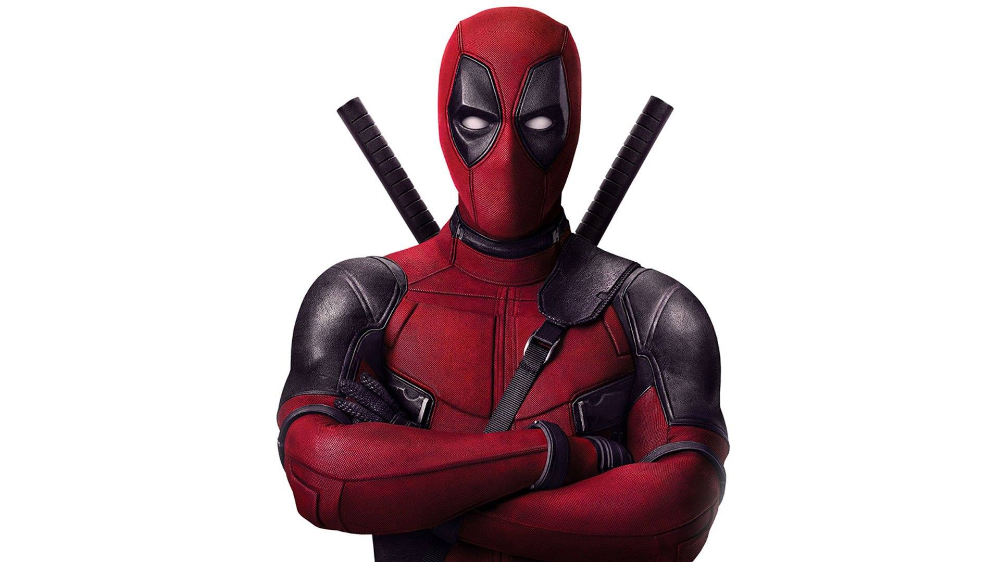
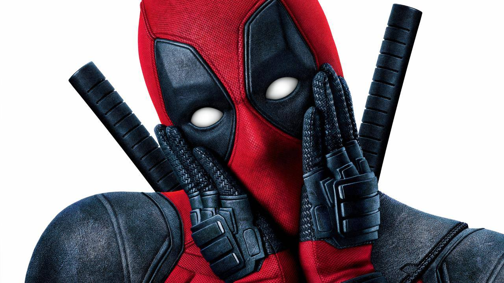
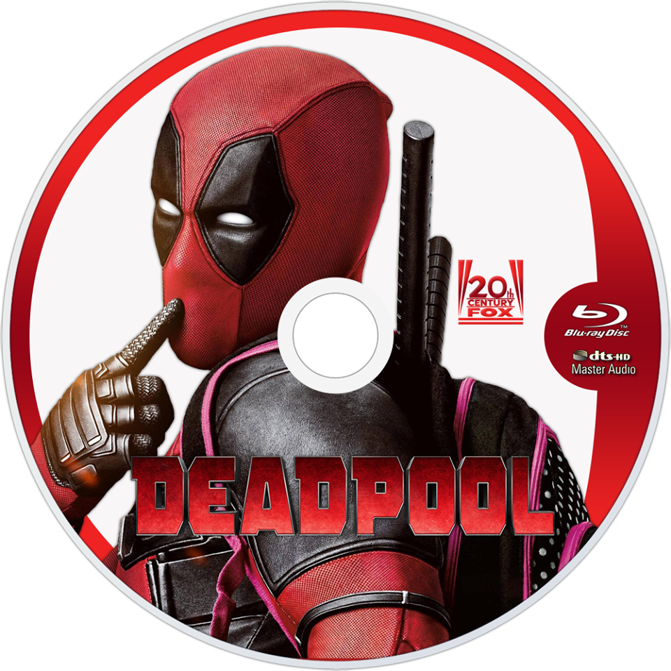

Deadpool
Hello! I'll show you something special on my site!
Deadpool is a 2016 American superhero film based on the Marvel Comics character of the same name, distributed by 20th Century Fox. It is the eighth installment of the X-Men film series. The film was directed by Tim Miller from a screenplay by Rhett Reese and Paul Wernick, and stars Ryan Reynolds in the title role alongside Morena Baccarin, Ed Skrein, T. J. Miller, Gina Carano, Leslie Uggams, Brianna Hildebrand, and Stefan Kapičić. In Deadpool, Wade Wilson hunts the man who gave him mutant abilities, but also a scarred physical appearance, as the antihero Deadpool. Development of a Deadpool film starring Reynolds began in February 2004, before he went on to play the character in X-Men Origins: Wolverine in 2009. Reese and Wernick were hired in 2010, and worked with Reynolds to more faithfully adapt the character (including his fourth wall breaking) after the portrayal in Wolverine was criticized for not doing so. Miller was hired in 2011 for his directorial debut, and an enthusiastic response to leaked test footage he created with Reynolds led to a green light from Fox in 2014. Additional casting began in early 2015, and filming took place in Vancouver from March to May. Visual effects were provided by multiple vendors and ranged from the addition of blood and gore to the creation of the CG character Colossus. Deadpool was released in North America on February 12, 2016, after an unconventional viral marketing campaign. The film became both a financial and critical success: it earned over $783 million, breaking numerous records and becoming the overall highest-grossing R-rated film, the highest grossing X-Men film, and the ninth-highest-grossing film of 2016; it received critical praise for Reynolds' performance, the film's style and faithfulness to the comics, and its action, though some criticized the plot as formulaic as well as the sheer number of jokes in the film; and it received numerous awards and nominations, including two Critics' Choice Award wins and two Golden Globe nominations. Deadpool 2 is set for release on June 1, 2018



Trailer

Soundtracks